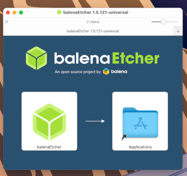
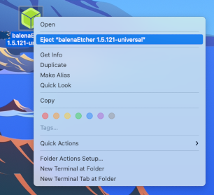

These instructions require:
- macOS 10.10 (Yosemite) or later
Start in macOS.
Install Tails using Etcher
Install an intermediary Tails using Etcher
In this step, you will install an intermediary Tails using the Tails USB image that you downloaded earlier.
Install Etcher
Click on the following link to download Etcher:
Open the Etcher download (DMG disk image).

To install Etcher, drag the Etcher icon onto the Applications icon.
Close the installation window of Etcher.
Optionally, eject the Etcher disk image from the desktop.

Instead of installing Etcher, you can
also install Tails using dd on the command
line.
Make sure that your USB stick is unplugged.
Open Terminal from .
Execute the following command:
diskutil list
It returns a list of the storage devices on the system. For example:
/dev/disk0 #: TYPE NAME SIZE IDENTIFIER 0: GUID_partition_scheme *500.1 GB disk0 1: EFI 209.7 MB disk0s1 2: Apple_HFS MacDrive 250.0 GB disk0s2 3: EFI 134.1 GB disk0s3 4: Microsoft Basic Data BOOTCAMP 115.5 GB disk0s4
Plug your USB stick in the computer.
Execute again the same command:
diskutil list
Your USB stick appears as a new device in the list. Check that its size corresponds to the size of your USB stick.
/dev/disk0 #: TYPE NAME SIZE IDENTIFIER 0: GUID_partition_scheme ∗500.1 GB disk0 1: EFI 209.7 MB disk0s1 2: Apple_HFS MacDrive 250.0 GB disk0s2 3: EFI 134.1 GB disk0s3 4: Microsoft Basic Data BOOTCAMP 115.5 GB disk0s4 /dev/disk1 #: TYPE NAME SIZE IDENTIFIER 0: FDisk_partition_scheme *8.0 GB disk1 1: Apple_HFS Untitled 1 8.0 GB disk1s1
Take note of the device name of your USB stick. In this example, the USB stick is 8.0 GB and its device name is /dev/disk1. Yours might be different.
If you are unsure about the device name, you should stop proceeding or you risk overwriting any hard disk on the system.
Execute the following commands to copy the USB image that you downloaded earlier to the USB stick.
Replace:
tails.img with the path to the USB image
If you are unsure about the path to the USB image, you can insert the correct path by dragging and dropping the icon of the USB image from Finder onto Terminal.
device with the device name found in step 6
You can try adding r before disk to make the installation faster.
diskutil unmountDisk device
dd if=tails.img of=device bs=16m && sync
You should get something like this:
dd if=/Users/me/tails-amd64-3.12.img of=/dev/rdisk9 bs=16m && sync
If no error message is returned, Tails is being copied on the USB stick. The copy takes some time, generally a few minutes.
If you get a Permission denied error, try adding
sudoat the beginning of the command:sudo dd if=tails.img of=device bs=16m && sync
If you get an invalid number ‘16m’ error, try using
16Minstead:dd if=tails.img of=device bs=16M && sync
The installation is complete once the command prompt reappeared.